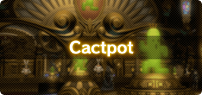
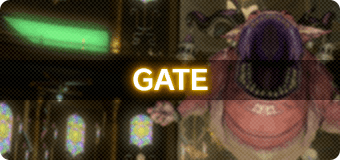
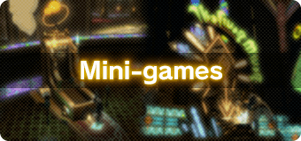
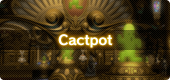
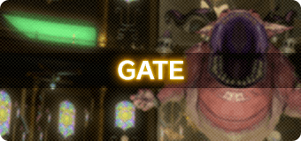
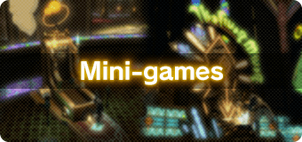

Thrill to the sight of majestic birds roaring down the straights at the chocobo races!
Pit your wits against your peers at the Triple Triad tables!
All this and more await at the Gold Saucer, where the wise walk out wealthier!
Перевод выполнен Morriganna Latrial.
Предложения, вопросы и замечания направляйте в Discord: morriganna
Перевод выполнен на основе информации с сайта Gold Saucer
Visiting the Gold Saucer
It Could Happen to You
- Level 15
- Ul'dah – Steps of Nald (X:9.6 Y:9.0)
- Well-Heeled Youth
-
Players must first complete one of the following main scenario quests:
The Gridanian Envoy, The Ul'dahn Envoy, or The Lominsan Envoy.
* Players can travel to the Manderville Gold Saucer via airship from any of the three city-states upon completing this quest.
* Travel from Ishgard is available after gaining access to the airship landing in Ishgard.
Attractions
When visiting the Manderville Gold Saucer, you can enjoy a number of games and activities that utilize a special currency called Manderville Gold Saucer points (MGP).
Upon first arriving, you can purchase MGP with gil by speaking with the Gold Saucer Attendant at Entrance Square (X:4.8 Y:6.7). Please note that the exchange service is restricted to players with less than 500 MGP in their possession.
* MGP cannot be exchanged for gil.
 The ancient Doman game of mahjong joins the entertaiment on offer at the Gold Saucer. Face off against your fellow adwentures or practice against automata, and hone your strategies to triumph in this contest of wits!
Savvy srylists from across the realms put their ensembles to the test in the Fashion Report, hosted by the mysterious Masker Rose. Pay careful attention to the theme, lest you be kudged a fashion failure.

The daily Mini Cactpot and weekly Jumbo Cactpot are two popular games of chance in the Gold Saucer that are both simple and potentially lucrative.

The Gold Saucer plays host to myriad attractions, all with one thing in common: you. Customers are not only onlookers, but a vital part of the show.

The Manderville Gold Saucer also hosts several mini-games for your entertainment. These simple yet captivating games are an easy to accumulate small amounts of MGP.
The ancient Doman game of mahjong joins the entertaiment on offer at the Gold Saucer. Face off against your fellow adwentures or practice against automata, and hone your strategies to triumph in this contest of wits!
Savvy srylists from across the realms put their ensembles to the test in the Fashion Report, hosted by the mysterious Masker Rose. Pay careful attention to the theme, lest you be kudged a fashion failure.

The daily Mini Cactpot and weekly Jumbo Cactpot are two popular games of chance in the Gold Saucer that are both simple and potentially lucrative.

The Gold Saucer plays host to myriad attractions, all with one thing in common: you. Customers are not only onlookers, but a vital part of the show.

The Manderville Gold Saucer also hosts several mini-games for your entertainment. These simple yet captivating games are an easy to accumulate small amounts of MGP.
Claiming Gold Saucer Prizes
After accumulating sufficient MGP, players can speak with attendants located throughout the Manderville Gold Saucer to exchange their MGP for myriad prizes.